전체 아카이브 검색
어느 페이지에서든 Ctrl + K로 핵심 콘텐츠와 증거 자료를 탐색합니다.
핀로그는 자료 조사와 토론, 현장 학습에서 얻은 내용을 보고서·카드뉴스·챗봇·웹 기록으로 정리하는 금융 학습 모임입니다.
각 항목을 선택하면 바로 확인할 수 있습니다.
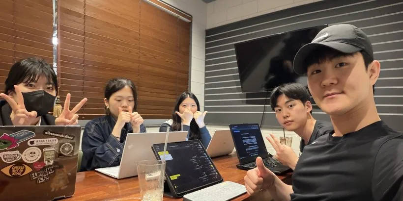
활동 보고서86쪽 공개본 · 학습·토론·현장 기록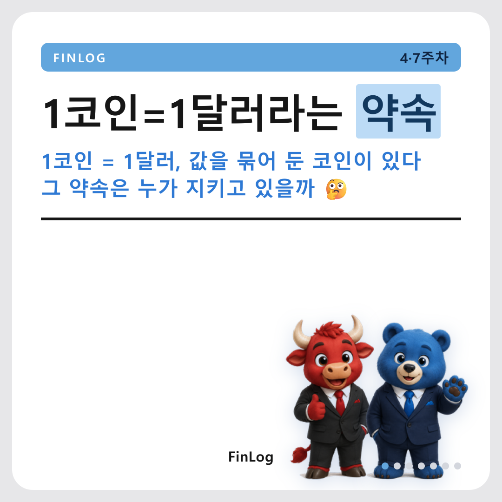
3분 금융 카드뉴스24세트·168장 · 주제별 해설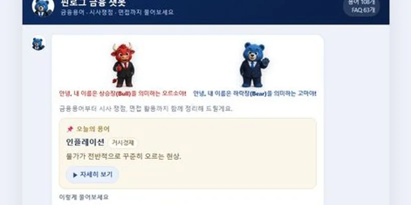
금융 지식 챗봇108개 용어 · 지식베이스 검색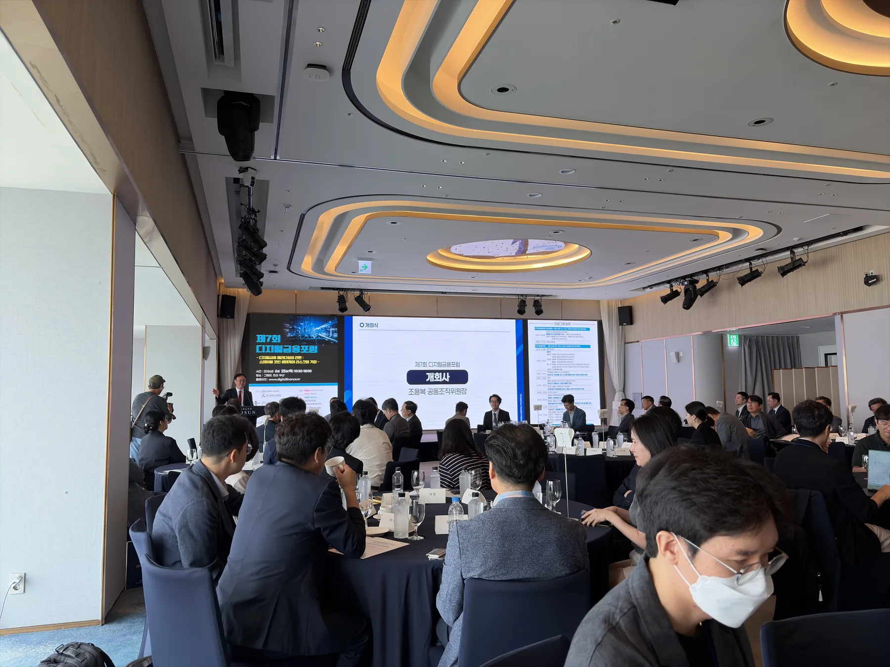
디지털 금융 포럼현장 기록 · 발표와 토론 정리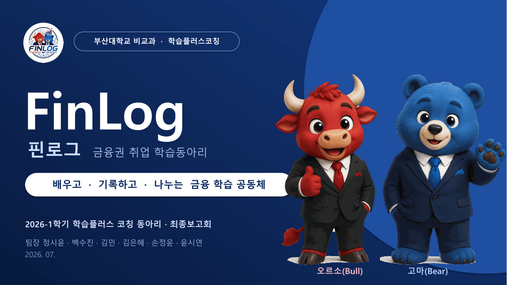
결과 발표 자료17장 공개본 · 활동과 결과 요약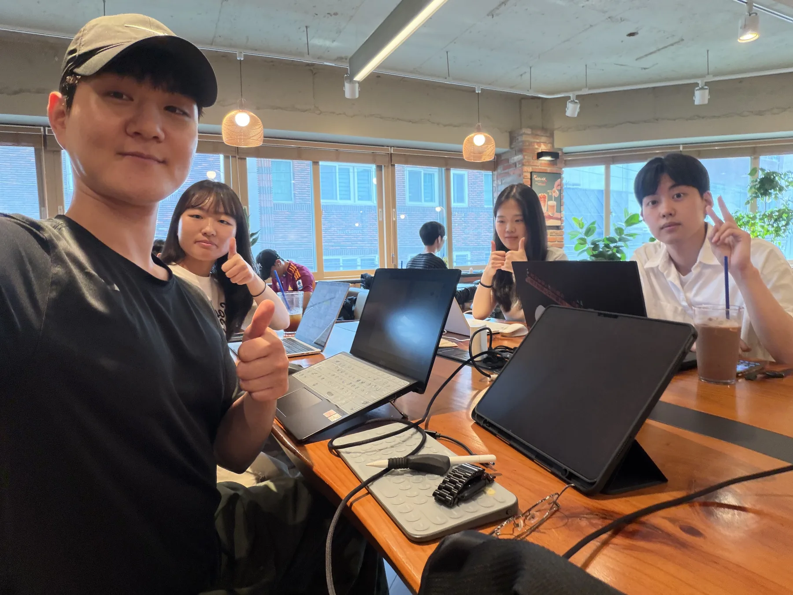
활동 사진 앨범모임·현장 · 과정의 주요 장면대면 모임과 온라인 검토, 현장 학습과 결과물 점검까지 활동의 주요 장면을 시간의 흐름에 따라 담았습니다.
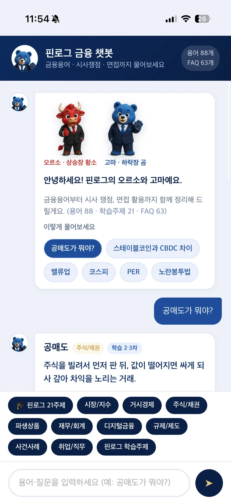
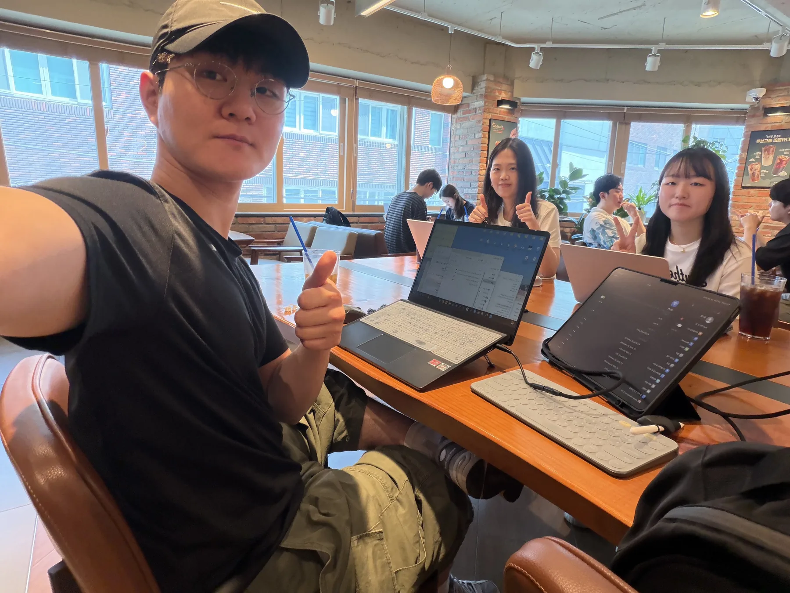
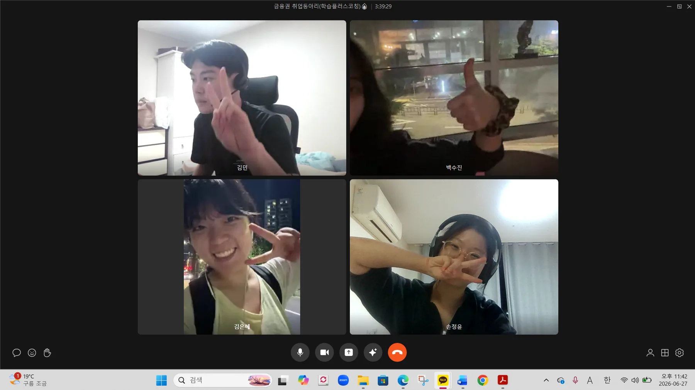
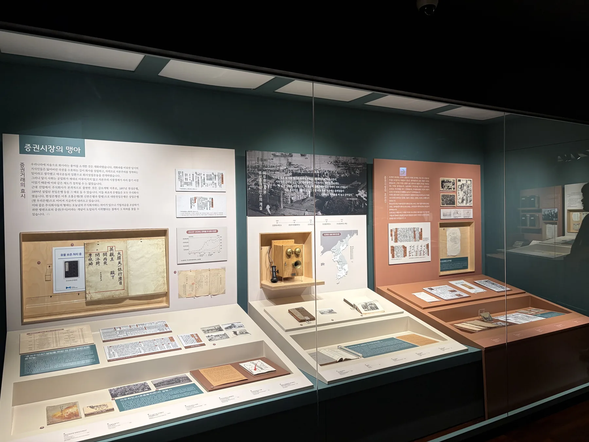
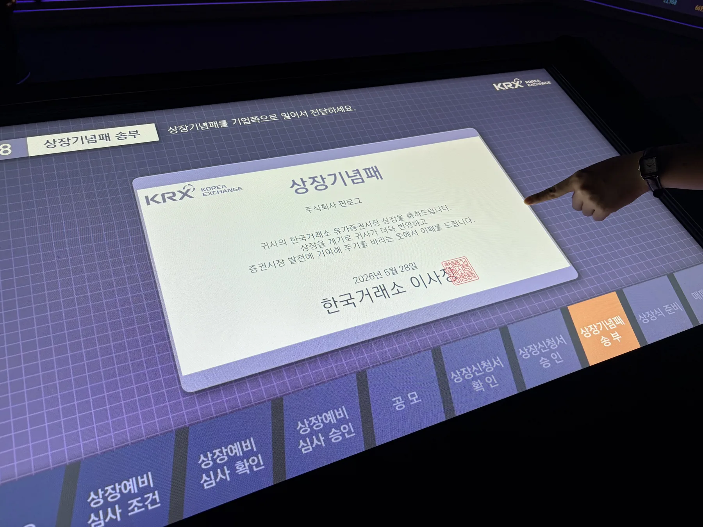
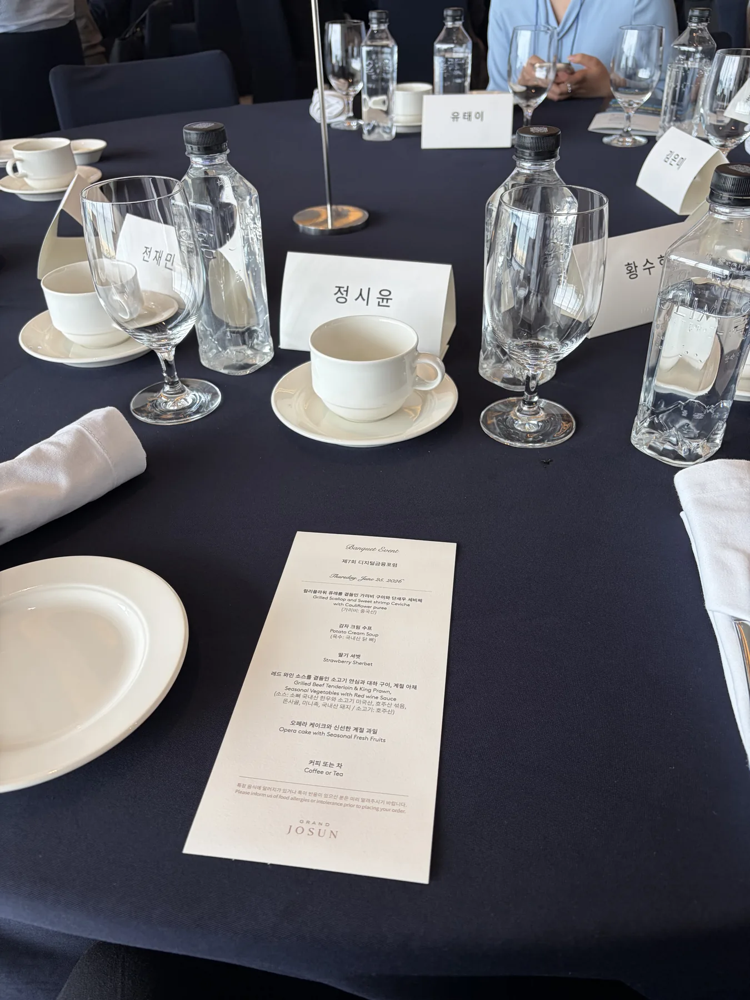
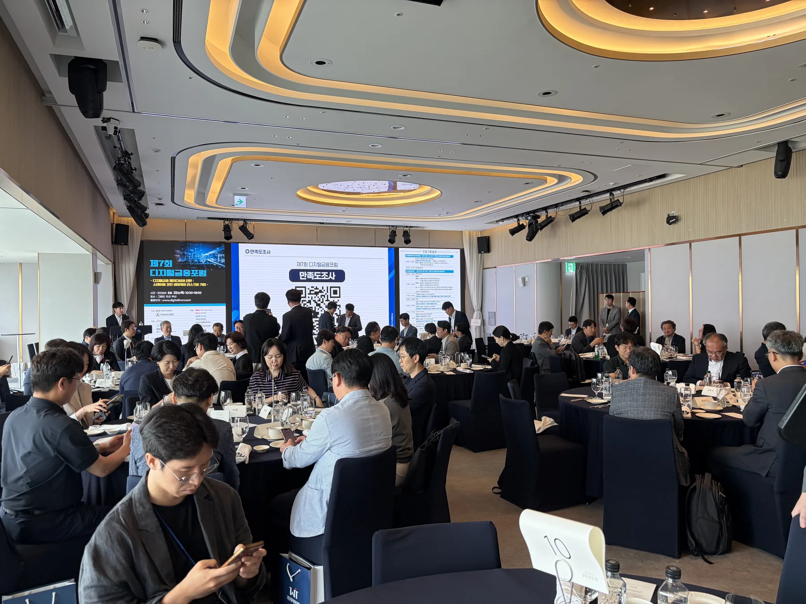
전공과 금융 지식의 출발점이 서로 달랐습니다. 관련 지식이 있는 구성원은 충분히 설명하고, 처음 접하는 구성원의 질문은 내용을 다시 살피는 기준이 되었습니다. 역할을 나누되 중요한 판단과 최종 확인에는 모두가 참여했습니다.
익숙한 주제에서도 다른 전공의 관점과 질문을 먼저 들었습니다.
전문 지식을 일방적으로 전달하지 않고 이해할 수 있는 표현으로 다시 설명했습니다.
맡은 부분을 책임 있게 확인하고, 공개한 기록도 꾸준히 보완하고 있습니다.
단순한 찬반을 넘어 전공별 관점을 반영한 역할 토론으로 논의를 확장했습니다. 분석 구조와 전달의 명료성을 각자의 관점에서 점검했습니다.
자본시장 구조·유동성·정책 파급 효과를 분석해 논리적 근거를 구성합니다.
소비자 보호·금융 윤리 관점을 더하고, 전문 용어를 독자가 명확히 이해할 수 있는 표현으로 정리합니다.
AI는 자료 탐색과 반론 도출, 문장 점검을 보조합니다. 활용 방법은 정기적으로 공유하되, 사실 확인과 최종 판단은 구성원이 직접 맡는다는 원칙을 지킵니다.
토론이 한쪽으로 치우치지 않도록 반론과 누락된 관점을 탐색하고, 팀이 논리의 타당성을 다시 검토합니다.
전문 용어를 설명하는 데 적합한 비유와 사례 후보를 찾고, 내용의 정확성과 적절성을 다시 확인합니다.
완성한 글을 독자의 관점에서 다시 읽고, 불필요한 전문 용어와 뜻이 모호한 문장을 찾아 정비합니다.
빅테크 독점·탄소세·기준금리·세대갈등을 바탕으로 분석 문장과 근거 제시 방식을 연습
공급망 정책·기술특례상장·공매도·시장 인프라 현안 종합
가상자산·블록체인·스테이블코인·CBDC·토큰증권
KRX 자본시장역사박물관 견학과 현직자 4인 인터뷰
대체거래소·밸류업·ESG 공시·거버넌스·파생상품 분석
보고서·챗봇·카드뉴스·웹 아카이브 제작과 검토
각 주제는 분석 기록과 핵심 해설, 전공별 관점의 토론을 연계해 정리했습니다.
네트워크 효과와 전환비용이 커질수록 플랫폼의 수수료·노출 정책이 시장경쟁에 미치는 영향도 확대된다.
탄소 배출의 사회적 비용을 가격에 반영할 때 산업 경쟁력과 분배 부담을 함께 검토해야 한다.
기준금리 변화는 대출·환율·자산가격을 거쳐 소비와 투자에 전달된다.
효율을 중시하는 자유무역과 회복력을 중시하는 공급망 정책 사이의 균형을 살폈다.
기술성과와 성장 가능성 중심의 상장 제도가 투자자 보호와 주관사 실사 책임에 던지는 과제를 검토했다.
공매도의 가격발견 기능과 무차입 거래 방지를 위한 시장 감시 체계를 함께 분석했다.
가치 고정의 신뢰를 좌우하는 준비자산·상환·공시 구조를 중심으로 비교했다.
실물자산의 권리를 디지털 증권으로 분할할 때 발생하는 접근성과 투자자 보호 문제를 살폈다.
임직원 보상, 재투자, 주주환원 사이에서 지속 가능한 자본배분 원칙을 검토했다.
복수거래소 도입이 거래비용·최선집행·시장감시에 미치는 영향을 정리했다.
잉여현금의 투자·배당·자사주 소각 결정이 주주가치와 대리인 비용에 미치는 영향을 분석했다.
기후위험 공시와 Scope 3 측정 부담, 단계적 제도 도입의 필요성을 검토했다.
실질적 교섭권 보장과 장기 쟁의의 경제적 외부효과 사이의 조정 기준을 살폈다.
국채 수요와 시장 신뢰에 미칠 가능성을 살피되 자금 유입의 불확실성을 구분했다.
파생상품의 헤지 기능과 레버리지·증거금 위험을 함께 분석했다.
현금흐름·시장배수·지배구조 가정이 기업가치평가에 미치는 영향을 정리했다.
HBM 경쟁을 기술력뿐 아니라 설비투자·공급망·금융조달의 관점에서 살폈다.
규정 준수 자동화의 효율과 오탐 관리·사람의 재검토 필요성을 함께 검토했다.
대안데이터의 금융포용 가능성과 개인정보·간접차별 위험을 함께 살폈다.
AI 시장감시의 탐지 효율과 설명 가능성, 사람의 최종 판단 원칙을 정리했다.
세대갈등을 연금·주거·자산형성 기회의 배분 문제로 재구성했다.
주제 선정부터 자료 조사, 작성, 검토, 발행까지의 과정을 형식별로 정리했습니다. 이후 학습에서 다시 참고하고 보완할 수 있도록 웹 아카이브로 남겼습니다.
스테이블코인과 CBDC 관련 논의를 보고서·발표 자료·웹 리포트·검토용 전사문으로 정리했습니다.
24개 주제를 질문·배경과 구조·쟁점·판단 기준에 따라 일곱 장으로 구성했습니다.
금융 용어와 관련 사례 108개를 담은 지식베이스 기반의 오프라인 웹 챗봇입니다.
16개 주제의 A4 분석과 전공자·비전공자 토론을 34쪽으로 정리했습니다.
콘텐츠 허브 블로그 24편과 1분 대화형 숏폼 대본 5편을 제작했습니다.
세 가지 활용 원칙, 실무형 프롬프트 12선, 검증 체크리스트를 정리했습니다.
자본시장역사박물관(BIFC 51층)에서 진행한 현장 학습을 보고서로 정리했습니다.
관세사·회계사·SK하이닉스·기술보증기금 현직자 4인의 실무 관점을 기록했습니다.
금융권 인재상, 논술 12개 주제, 면접 질문 30개를 16쪽으로 구성했습니다.
어느 페이지에서든 Ctrl + K로 핵심 콘텐츠와 증거 자료를 탐색합니다.
108개 금융 용어와 63개 FAQ를 정규화해 외부 API 없이도 검색·응답하도록 구성했습니다.
168장 카드뉴스의 썸네일, WebP 변환, 지연 로딩, 키보드 확대 보기를 하나의 흐름으로 관리합니다.
페이지 링크, 이미지 설명·크기, 중복 ID, 스크립트 문법을 발행 전에 자동으로 확인합니다.
KRX 자본시장역사박물관, 제7회 디지털 금융 포럼, 현직자 인터뷰를 통해 제도와 실무의 연결점을 확인했습니다.


확실하지 않은 부분은 주저하지 않고 질문했으며, 맡은 일의 진행 상황은 꾸준히 공유했습니다. 의견이 다를 때에는 개인의 입장보다 근거와 공동의 목적을 중심으로 합의점을 찾았습니다.
자본시장·정책·재무 분석을 바탕으로 논리와 근거를 점검합니다.
윤리·소비자 관점과 명료한 해설을 담당합니다.
핀로그의 결과물은 전공별 질문과 검토를 거쳐 완성됩니다. 일정과 진행 상황을 공유하고 필요한 부분을 조정했으며, 공개 이후에도 기록을 보완하고 있습니다.
결과물의 제작 배경을 확인할 필요가 있을 때 개인 역할을 구분해 볼 수 있도록 보조 정보로 남겼습니다.
주요 산출물을 웹 아카이브에서 직접 확인할 수 있도록 연결했습니다.